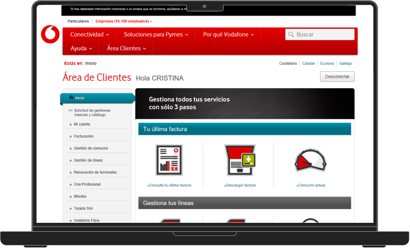
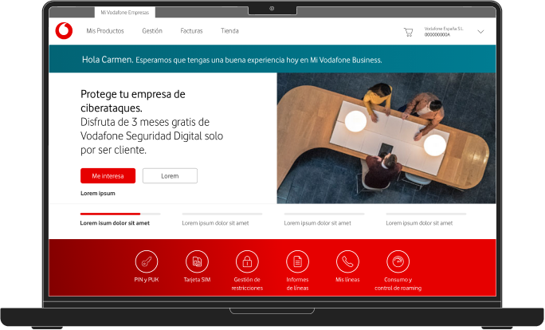
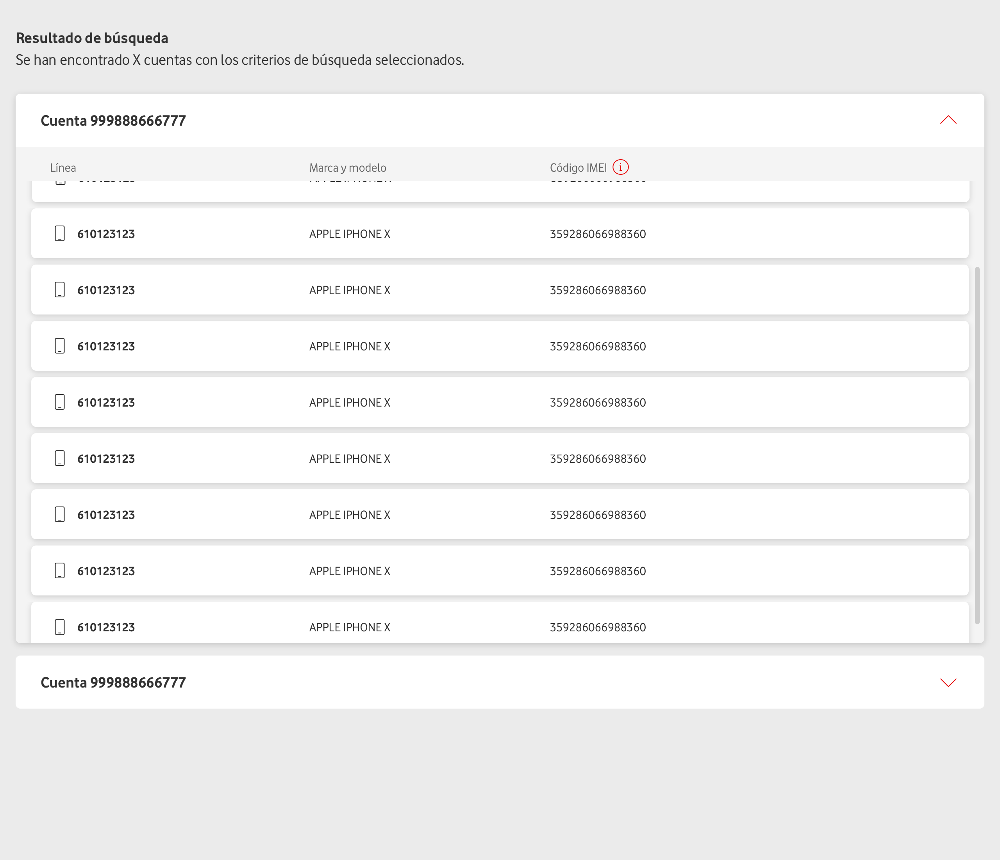
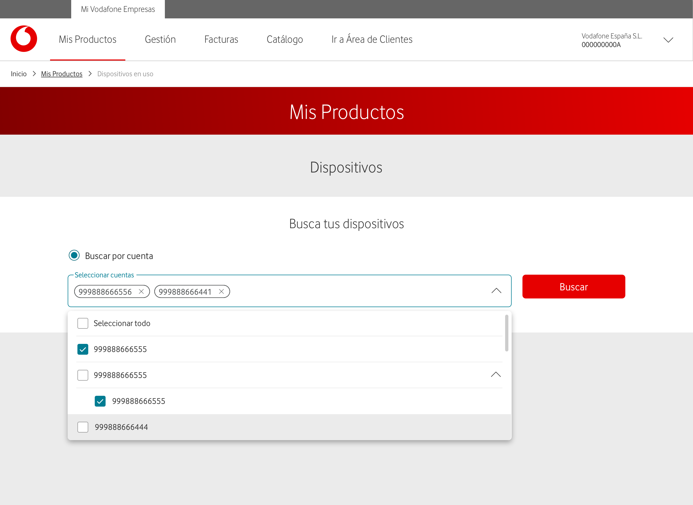

VODAFONE’S B2B PLATFORM
Redesign | UX/UI
Tasked with revitalizing Vodafone's B2B platform, we embarked on a comprehensive transformation. This project involved a complete visual and functional redesign, alongside a seamless transition of the framework from Angular to React, ensuring the platform's competitiveness and enhanced user experience.
Transforming the platform
How might we turn a corporate labyrinth into a self-service paradise?
Our project began with the challenge of transforming a platform whose visual design was notably different from the rest of the company. We aimed to implement the Source design system to revitalize the visual aspect while restructuring the web architecture. This allowed us to enhance the user experience and create a more intuitive interface.
Among the main challenges we faced was adapting the design system to meet the specific needs of the B2B environment. Additionally, we successfully managed the coexistence of two frameworks during the migration process from Angular to React.
Year
2024
Client
Vodafone
My Role
UX/UI Designer
The team
Cesar Valencia: Project Owner
Patricia Montolio: Tech Lead
Gabriela Pardos: Business Analyst
The Goal
Creating Mi Vodafone Business
Our primary objective was the complete overhaul of the B2B platform. Throughout this process, we encountered several challenges. It was essential to continue developing new features and updating existing sections while simultaneously redesigning the information architecture and adapting the design system.
The project presented a high level of technical complexity due to the need to maintain two frameworks in production simultaneously. New sections were developed in React, while the existing sections continued to operate in Angular.
Old website
Website redesign
Information Architecture
Tree -Testing
During our heuristic analysis of the website, we identified that the organic and unstructured growth of the platform had created a confusing structure that complicated navigation. To address this challenge, we conducted a tree-testing of the current architecture to pinpoint where users encountered obstacles.
Our goal was to develop a new architecture based on user feedback and anticipate the new sections being planned. As a first step, we mapped the current website structure and designed a series of tasks to evaluate the flows we considered most problematic.
User pain points
The key pain points identified by users were crucial in shaping the project’s development:
- Long search times to find the appropriate section.
- Confusing naming in many sections, primarily due to the retention of internal process terminology.
- Oversized sections, as some were too generic and became catch-all areas.
- Poor communication regarding process functionality, with few tutorials and poorly communicated instructions.
- Complicated language and lack of a defined brand tone, which should be simple and user-friendly.
Overall, we found a platform that had evolved for internal management use and was not prepared to function as a self-service platform open to users.
Former User Flow and Arquitecture
Analizing the results
The results clearly indicated that even the most experienced users faced difficulties navigating the current architecture of the platform, with a very high error rate when attempting to locate sections.
Based on the navigation flows users followed to find each section, we developed a new information architecture and optimized the naming of many sections.
Additionally, we proposed improvements to the tone and wording of the platform's messages and tutorials.
The implementation of the newly proposed information architecture demonstrated significantly improved outcomes, establishing it as our goal. Due to technical constraints that prevented an immediate, comprehensive transition, we employed a phased approach, integrating the new architecture incrementally as each section of the platform was updated.
Design System
Adapting Source
Source is the design system implemented by Vodafone across most of its platforms. When attempting to apply it to Mi Vodafone Business, we found that the existing components did not meet the specific needs of a B2B platform. This needed the creation and adaptation of specific components capable of managing, searching, and visualizing large volumes of data.
Initially, we developed a custom design system for the platform while using Angular. Later, with the transition to React, we collaborated with the Source team to request and integrate B2B requirements into the design system.
Search results
Multi-parameter Search
To effectively manage corporate accounts, users, and lines, our project required advanced data visualization and selection capabilities utilizing multiple sublevels of information. This complexity surpassed the functionality of components initially designed for individual users, leading us to develop a more sophisticated solution tailored to meet corporate needs.
User Experience
Improving UX
During the update of each website section with new design system components, we seized the opportunity to enhance the user experience of existing areas. At the same time we developed entirely new functionalities aligned with the platform's strategic roadmap, ensuring a cohesive and forward-looking user experience.
New Functionalities
In addition to existing features such as invoice inquiries, usage tracking, and employee service management, we introduced several new functionalities:
- Technical Support: We developed a system for submitting incident tickets and self-diagnostic workflows.
- Device Store: An e-commerce platform for ordering mobile devices for employees.
- Bulk Requests: A method to manage services for a large number of employees simultaneously.
- Report Generation: The ability to generate customized reports on contracted products.

Results
Brand new platform
The redesign not only revitalized the brand’s image but also improved user experience, engagement, and perception, setting a solid foundation for future growth and innovation.

OTHER WORKS
TEXTP

TEXTP
![Logo](data:image/svg+xml,%3csvg%20width='65'%20height='32'%20viewBox='0%200%2065%2032'%20fill='none'%20xmlns='http://www.w3.org/2000/svg'%3e%3cpath%20fill-rule='evenodd'%20clip-rule='evenodd'%20d='M0.000337601%2032.0006L0.000340398%200.000847371C0.000431951%200.000847371%200.00052255%200.000845464%200.000613149%200.000845464C8.8371%200.000846237%2016.0005%207.16424%2016.0005%2016.0007C16.0005%2024.8372%208.8371%2032.0006%200.000610352%2032.0006C0.000519753%2032.0006%200.000429153%2032.0006%200.000337601%2032.0006Z'%20fill='black'/%3e%3cpath%20fill-rule='evenodd'%20clip-rule='evenodd'%20d='M32.0002%200V31.9998C32.0001%2031.9998%2032%2031.9998%2031.9999%2031.9998C23.1634%2031.9998%2016%2024.8364%2016%2015.9999C16%207.16339%2023.1634%200%2031.9999%200C32%200%2032.0001%200%2032.0002%200Z'%20fill='black'/%3e%3cpath%20fill-rule='evenodd'%20clip-rule='evenodd'%20d='M49.7337%200.0652219C49.2546%200.0220533%2048.7695%200%2048.2792%200C39.4427%200%2032.2793%207.16339%2032.2793%2015.9999C32.2793%2024.8364%2039.4427%2031.9998%2048.2792%2031.9998C57.1156%2031.9998%2064.279%2024.8365%2064.2791%2016H49.7337V0.0652219Z'%20fill='black'/%3e%3c/svg%3e)